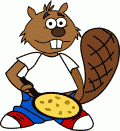

 Castor prepared pancakes. Castor has prepared a lot of pancakes ! Now he wants to store them by size, by putting the biggest pancake down and smallest up.
Click on a pancake to rotate it and all the pancakes above it upside down. The less turns you make, the more points you get.